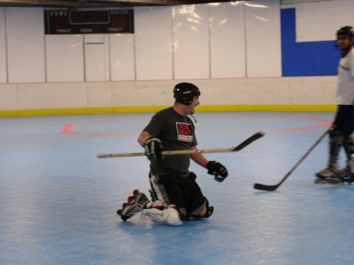

Tom Wooldridge, Cofounder
'Tommy Who'

Tom in a scrimmage without his pink striped helmet.
Here's a timeline of Tom's life achievements:
- 1982 - Born in England with hockey in his blood
- 1984 - Becomes a big brother to Jill
- 1987 - Starts his baseball career (thought this was about hockey?)
- 1988 - Enrolls in school
- 1992 - Leads little league baseball team to 2nd place championship
- 1994 - Makes big splash in eastern NM baseball region as an all-star and leading homerun hitter
- 1996 - Proves himself PAcaliber
- 2000 - Enrolls in college
- 2004 - Dabbles in online professional gaming
- 2009 - Graduates from college with electrical engineering degree
- 2010 - Starts work career at Westinghouse
- 2011 -
- Rallies engineering friends to play roller hockey
- Enlists (now) brother-in-law, Dave, to find experienced hockey players
- Cofinds 'The *** Shockers' Bridgeville Rollerplex team with Kovacs, Rags, and Jonesy
- 2012 - Leads 'The Shockers' to first victory (by forfeit)
- 2013 - Leads 'The Shockers' to first victory (in regular season)
- 2014 -
- Creates 'Shockers Organization' with minor league affiliate team 'Baby Shox'
- Supports both teams financially and gets nicknamed 'Tommy Who' for m.i.a.
- Makes hockey career comeback
- 2015 -
- Becomes #1 on-call sub for both teams
- Has first child
- Starts side business of visiting all east cost Walmarts
- 2016 - Retires from Shockers Organization
- Current - Lives in Cranberry with his 2 kids and wifey